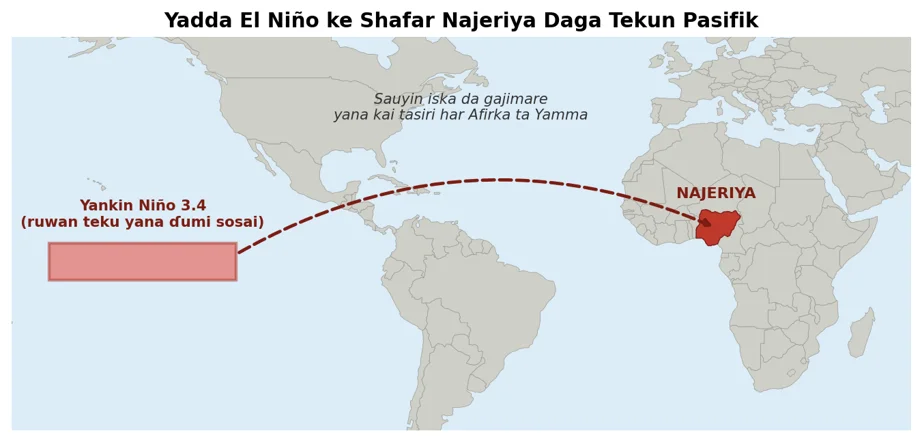
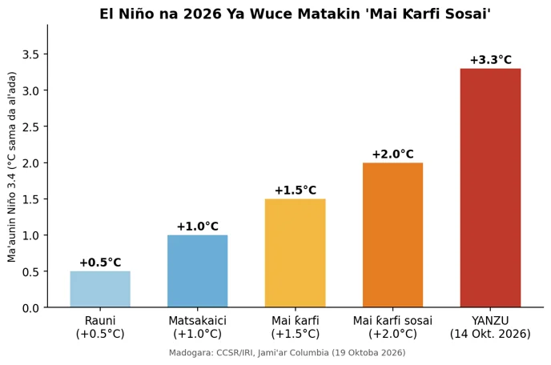
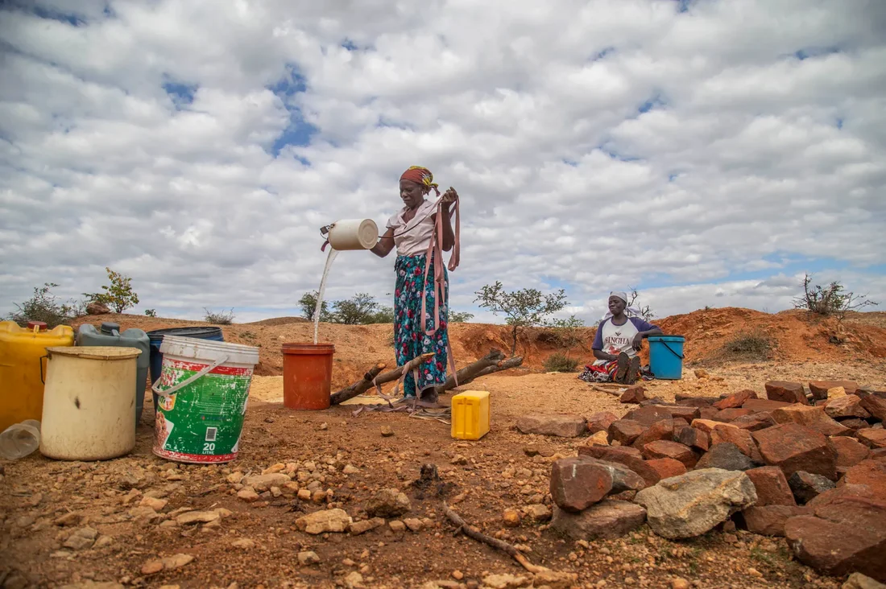

1. Gabatarwa
A yayin da ake ci gaba da fuskantar ƙalubalen sauyin yanayi a sassa daban-daban na duniya, wani sabon lamari na yanayi mai suna El Niño ya fara jan hankalin masana kimiyya, hukumomin kula da yanayi da masu tsara manufofi. Wannan lamari yana da muhimmanci ga Najeriya saboda yana iya sauya yanayin zafi, ruwan sama, noma, samar da abinci da kuma wadatar ruwa a sassa daban-daban na ƙasar.
A shekarar 2026, El Niño ya riga ya kafu a Tekun Pacific, kuma hasashen masana ya nuna cewa zai iya ƙara ƙarfi kafin ƙarshen shekara, tare da ci gaba da tasirinsa zuwa farkon shekarar 2027. Hukumar Kula da Yanayi ta Duniya (WMO) da Cibiyar Hasashen Yanayi ta Amurka (NOAA) sun yi gargadin cewa wannan lamari na iya zama ɗaya daga cikin manyan abubuwan El Niño da aka gani a tarihin baya-bayan nan.
Amma mene ne El Niño? Ta yaya yake faruwa? Kuma me ya sa ya kamata manoma, iyalai, hukumomi da sauran 'yan Najeriya su kula da shi?
2. Mene ne El Niño?
El Niño wani yanayi ne da ke faruwa lokacin da ruwan saman Tekun Pacific, musamman yankin tsakiya da gabashinsa, ya yi ɗumi fiye da yadda ya saba. Wannan ɗumi yana canza yadda iska da gajimare ke zagayawa a duniya, har ya shafi ruwan sama da zafi a nahiyoyi daban-daban, ciki har da Afirka ta Yamma. Kalmar El Niño ta samo asali ne daga harshen Sifaniyanci, ma'ana “Ɖan Yaro”. Bisa ga Hukumar Kula da Yanayi ta Duniya (WMO), El Niño yana faruwa duk bayan shekara biyu zuwa bakwai, kuma yana ɗaukar wata tara zuwa goma sha biyu. Amma ba kullum yake kawo bala'i iri ɗaya ba; tasirinsa yana bambanta daga yanki zuwa yanki.

3. Yaya ƙarfin El Niño na 2026 yake?
Wannan karon lamarin ya fi ƙarfin yadda aka saba gani. A cewar bayanan CCSR/IRI na Jami'ar Columbia, ma'aunin Niño 3.4 na mako wanda ya shafi 14 ga Oktoba ya kai +3.3°C, wato ya zarce matakin “mai ƙarfi sosai” (+2.0°C). Dukkan samfuran hasashe 27 da aka duba suna nuna cewa El Niño zai ci gaba da kasancewa mai ƙarfi sosai daga Oktoba–Disamba 2026 har zuwa Disamba–Fabrairu 2027. A watan Agusta, Cibiyar Hasashen Yanayi ta Amurka (NOAA) ta ce akwai yiwuwar kashi 69 cikin ɗari na samun lamarin da zai fi kowane El Niño da aka rubuta tun 1950. WMO kuma ta yi gargaɗi cewa yana iya ɗorewa har zuwa farkon 2027.

4. Abin da ake tsammani a Najeriya
NiMet ta bayyana cewa wannan “super El Niño” zai iya sauya yadda ruwan sama zai yi a ƙasarmu, musamman tsawon damina da lokacin da za ta ƙare. Hasashenta na Agusta–Oktoba ya nuna bambanci tsakanin arewa da kudu:
- Arewa: ruwan sama fiye da kima a Sokoto, Kebbi, Zamfara, Katsina, Kano, Jigawa, Yobe, Borno da Bauchi, wanda ke ƙara haɗarin ambaliya.
- Kudu: ruwan sama ƙasa da kima a Oyo, Ogun, Osun, Ekiti, Edo da Delta, kuma wataƙila Kogi da wasu sassan Benue, wanda ke ƙara haɗarin fari da ƙarancin ruwa.
Haka kuma ana sa ran zafi zai ƙaru. Cibiyar Climate Impact Lab ta yi hasashen cewa Najeriya na iya fuskantar ƙarin mace-macen zafi 31,400 tsakanin Satumba 2026 da Fabrairu 2027, idan aka kwatanta da shekara ta yau da kullum. Wannan hasashe ne, ba tabbaci ba; yanayin gida da shirin al'umma ne za su tantance ainihin abin da zai faru.

Tasiri kan noma, ruwa, wuta da lafiya
| Fanni | Tasirin da ake sa ran gani a Najeriya |
|---|---|
| Noma | Tsawaitar lokacin rashin ruwan sama na iya rage amfanin gona, musamman masara, dawa da gero. Manoman da suka dogara da ruwan sama za su fi fuskantar haɗari sakamakon katsewar damina da zafin rana. |
| Ruwan sama | Sauyin tasirin ruwan sama na iya haifar da dogayen lokutan rashin ruwa a wasu yankuna, musamman Arewa, tare da yiwuwar samun ruwan sama mai ƙarfi a wasu lokuta. |
| Zafin yanayi | Ƙarin zafin rana na iya haifar da matsanancin zafi, ƙara bushewar ƙasa, rage danshin muhalli da kuma ƙara buƙatar ruwa. |
| Lafiya | Ƙarin zafi na iya jawo rashin ruwa a jiki, gajiya da bugun zafin rana. Ambaliya da gurɓacewar ruwan sha kuma na iya ƙara haɗarin cututtuka kamar kwalara da zazzabin cizon sauro. |
| Abinci | Raguwar amfanin gona na iya rage wadatar abinci a kasuwanni, ƙara tsadar kayan abinci da kuma tsananta matsalar ƙarancin abinci ga iyalai masu ƙaramin ƙarfi. |
| Ruwa | Dogayen lokutan rashin ruwan sama na iya rage ruwan da ke cikin koguna, madatsun ruwa da rijiyoyi, tare da ƙara wahalar samun ruwan sha da na noma. |
| Ambaliya | Duk da yiwuwar samun ƙarancin ruwan sama a wasu yankuna, ruwan sama mai ƙarfi cikin ɗan lokaci na iya haifar da ambaliya, musamman a yankunan da ke da raunin magudanan ruwa. |

5. Wane mataki ya kamata Najeriya ta ɗauka?
Shirye-shiryen fuskantar El Niño ya kamata su fara tun kafin matsalolin yanayi su tsananta. Wannan nauyi ya rataya ne a kan gwamnati, hukumomin kula da yanayi, manoma, ƙungiyoyin farar hula da kuma al'umma baki ɗaya.
Ga gwamnati
Ya kamata a ƙarfafa tsarin gargaɗin farko, inganta hanyoyin samun bayanan yanayi da kuma samar da shirye-shiryen taimakon gaggawa ga yankunan da ke cikin haɗari.
Ga manoma
Ya kamata su riƙa bibiyar hasashen NiMet, amfani da nau'ikan iri masu jure fari, daidaita lokutan shuka da kuma inganta hanyoyin adana ruwa.
Ga iyalai
A riƙa shan isasshen ruwa mai tsafta, rage zaman rana a lokacin tsananin zafi, musamman tsakanin ƙarfe 11 na safe zuwa 4 na yamma, tare da kula da yara da tsofaffi.
Ga al'umma
A share magudanan ruwa, kauce wa gina muhalli a wuraren da ambaliya ke yawan faruwa, sannan a guji shiga ko tuƙa mota a cikin ruwan da ya mamaye hanya.
Ga hukumomin lafiya
A ƙarfafa wayar da kan jama'a game da cututtukan da ke da alaƙa da zafi, gurɓataccen ruwa da sauyin yanayin muhalli.
Wannan ya yi daidai da shawarwarin da Hukumar Ba da Agajin Gaggawa ta Ƙasa (NEMA) ta fitar a ranar 25 ga Oktoba, 2026, inda ta jaddada muhimmancin kariya daga zafi, adana ruwa, tsaron abinci da shirye-shiryen al'umma.

6. Abin da ya kamata jama'a su fahimta
Yana da muhimmanci a jaddada cewa El Niño ba shi ne kaɗai ke tsara yanayin Najeriya ba. Iskokin damina na Yammacin Afirka, yanayin Tekun Atlantic, yanayin zafi na yankin da sauran abubuwan yanayi suna taka muhimmiyar rawa.
Saboda haka, ba dukkan hasashen ƙarancin ruwan sama ko ambaliya ba ne zai tabbata. Hasashen yanayi yana bayyana yiwuwar faruwar abubuwa ne bisa bayanan kimiyya da ake da su a lokacin. Hukumar NiMet ce za ta ci gaba da samar da bayanan da suka fi dacewa da takamaiman jihohi da yankuna.
7. Kammalawa
El Niño na tunatar da mu cewa sauyin yanayi ba matsalar da ta shafi wasu ƙasashe kaɗai ba ce. Tasirinsa na iya shafar rayuwar yau da kullum, samar da abinci, lafiyar jama'a, tattalin arziki da zaman lafiyar al'ummomi.
Yayin da ake sa ran El Niño na shekarar 2026/2027 zai ƙara ƙarfi, Najeriya na buƙatar ingantaccen tsarin shiri, wayar da kan jama'a da haɗin gwiwar hukumomi da al'umma. Kowane ɗan Najeriya yana da rawar da zai taka. Manomi ya kamata ya fahimci hasashen yanayi kafin shuka. Iyali su san yadda za su kare kansu daga tsananin zafi. Hukumomi kuma su tabbatar da cewa bayanan gargaɗi sun isa ga waɗanda suke buƙatarsu.
El Niño ba abin tsoro kawai ba ne, gargaɗi ne da ya kamata mu ɗauka da muhimmanci. Fahimta, shiri da ɗaukar mataki tun da wuri za su taimaka wajen rage asarar rayuka da dukiyoyi.